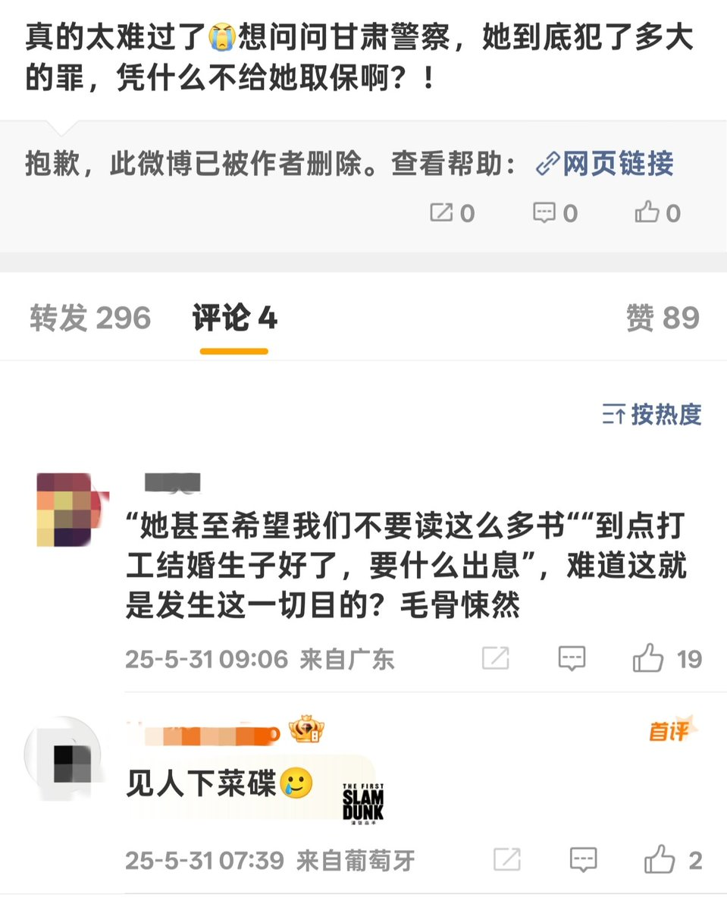

時璃風医詩🌈🏳️🌈
@hagishigure
为什么不到荷兰申请政治避难。🤨
反正我觉得更多的自由和逃离才是唯一自己能得到的，什么家什么朋友都是建构的东西。🤨

panchiao🚩🏴🏴☠️🏳️⚧️🏳🌈
@liulingyue
这的确就是它们想要的，只有为繁殖服务的性才是"正常"的，自我愉悦的幻想必须被消灭。
要将性相关的欲望收编驯化进家庭-婚育-国家的再生产体系，那个她们用尽全力逃出的"正常"世界：工作、然后在婚姻中交换身体，在子宫里生产下一代劳动力，永远不再妄想"出息"，妄想成为不被国家-父权中介的自主存在 https://t.co/hyxizpGr5W